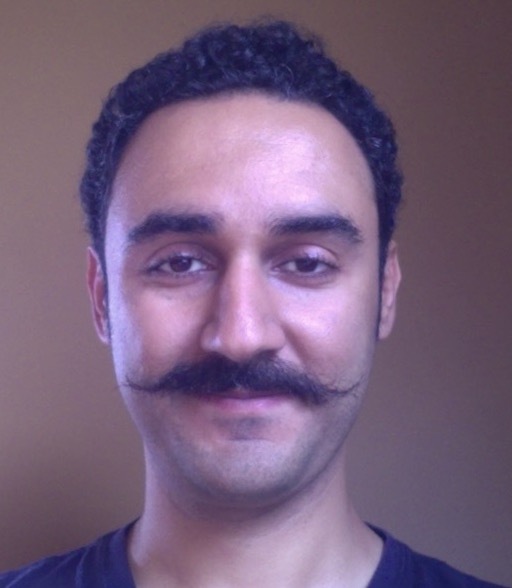

|  |
Saeed Nejati PhD Candidate Department of Electrical and Computer Engineering University of Waterloo 200 University Avenue West Waterloo, Ontario, N2L 3G1 Canada Email: snejati@uwaterloo.ca Phone: 519-888-4567, ext. 31457 Office: E5 5033 |
I am currently a PhD candidate at University of Waterloo, working on SAT-based Cryptanalysis, with professors Catherine Gebotys and Vijay Ganesh. I got both my Bachelor's and Master's degrees in Computer Engineering from Shahid Behesti University, Tehran, Iran. My current research interests are: Cryptography, Hardware Security and SATisfiability Solvers.
You can also find me on Linkedin.